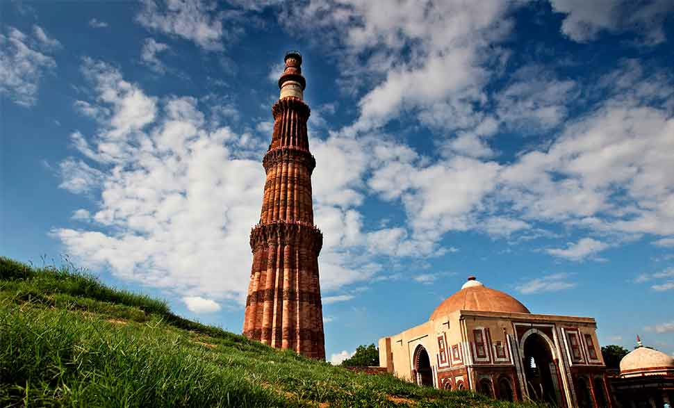

The Indian Historical Monuments at New Delhi
The Red Fort

The Red Fort, which is also known as the Lal Qila, was constructed by one of the most famous Mughal emperors, Shah Jahan. Built on the banks of river Yamuna, the fortress-palace was designed by architect Ustad Ahmad Lahauri. It took 8 years and 10 months to build the magnificent fort. The fort served as the royal residence of the Mughal emperors from 1648 to 1857. It took over the honor of royal residence from the famous Agra Fort when Shah Jahan decided to shift his capital from Agra to Delhi. The Red Fort derives its name from the red-sandstone walls, which make the fort almost impregnable. The fort, which is located at Old Delhi, is one of the massive and prominent structures of India and is a fine example of Mughal architecture. It is often considered as the pinnacle of Mughal creativity. In modern times, the fort is of importance to the people of India as the Indian Prime Minister delivers his Independence Day speech from the fort, every year on August 15. In 2007, it was declared as UNESCO World Heritage Site.
The India Gate
India Gate, official name Delhi Memorial, originally called All-India War Memorial, monumental sandstone arch in New Delhi, dedicated to the troops of British India who died in wars fought between 1914 and 1919. India Gate, which is located at the eastern end of the Rajpath (formerly called the Kingsway), is about 138 feet (42 metres) in height.
India Gate is one of many British monuments built by order of the Imperial War Graves Commission (later renamed Commonwealth War Graves Commission). The architect was Sir Edwin Lutyens, an Englishman who designed numerous other war memorials and was also the principal planner of New Delhi. The cornerstone was laid in 1921 by the duke of Connaught, third son of Queen Victoria. Construction of the All-India War Memorial, as it was originally known, continued until 1931, the year of the formal dedication of New Delhi as the capital of India.
The Qutb Minar

Built in the early 13th century a few kilometres south of Delhi, the red sandstone tower of Qutb Minar is 72.5 m high, tapering from 2.75 m in diameter at its peak to 14.32 m at its base, and alternating angular and rounded flutings. The surrounding archaeological area contains funerary buildings, notably the magnificent Alai-Darwaza Gate, the masterpiece of Indo-Muslim art (built in 1311), and two mosques, including the Quwwatu'l-Islam, the oldest in northern India, built of materials reused from some 20 Brahman temples.